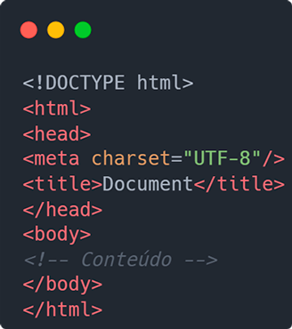

INSTRUÇÕES: Neste índice você deve colocar os tópicos que mais entendeu. Estes apenas são sugestões.
A história dos computadores começou no século XX, com a criação de máquinas capazes de realizar cálculos de forma automática. Um dos primeiros dispositivos considerados um computador foi a máquina analítica idealizada por Charles Babbage no século XIX, embora nunca tenha sido concluída. Mais tarde, durante a Segunda Guerra Mundial, surgiram os primeiros computadores eletromecânicos e eletrônicos.
Entre os primeiros modelos importantes estão:
Esses computadores eram enormes, ocupavam salas inteiras e utilizavam válvulas eletrônicas. Com o tempo, a tecnologia evoluiu com a invenção do transistor (anos 1950), dos circuitos integrados (anos 1960) e dos microprocessadores (anos 1970), tornando os computadores cada vez menores, mais rápidos e acessíveis, até chegarmos aos modelos pessoais e portáteis que usamos atualmente.
1O computador Z3 foi a primeira máquina de computação totalmente automática e programável do mundo, criado em 1941 pelo alemão Konrad Zuse.Na programação web, o termo "client" (ou cliente, em português) se refere ao lado do usuário em uma aplicação web — ou seja, tudo o que é executado no navegador (browser) de quem está acessando o site ou sistema.
O que são clients na programação web?
Na programação web, servers (ou servidores) são computadores ou sistemas responsáveis por fornecer dados, serviços ou recursos para outros computadores, chamados clientes.
Um server é:
Uma estrutura básica de HTML é o esqueleto de qualquer página web. Ela define os elementos principais para que os navegadores possam entender e exibir corretamente o conteúdo.
✅ Estrutura básica de um documento HTML:
"A internet é a maior força democratizante da história da humanidade, mas, como qualquer poder, deve ser usada com responsabilidade"Voltar
Listas ordenadas:
Listas não-ordenadas:
INSTRUÇÕES: Coloque links para outras páginas que falam sobre estes assuntos. Não esquece de que precisa abrir em outra aba/janela do navegador.